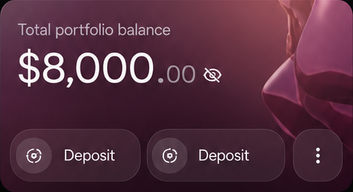
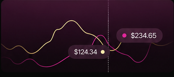
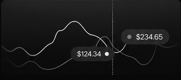
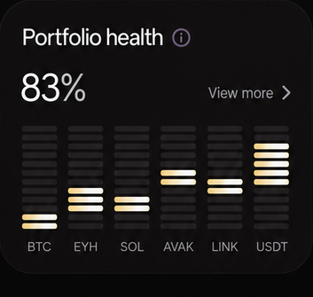
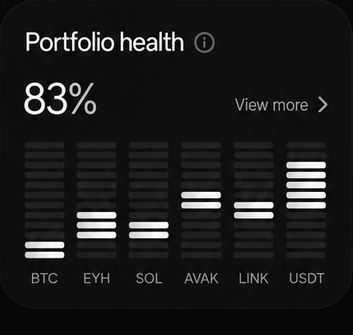
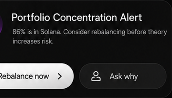
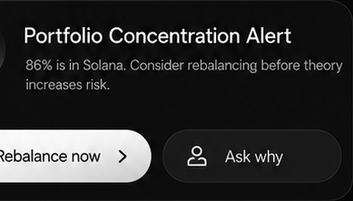

Source atlas — original / monochrome
Internal comparison artifact. Not part of the application. A annotated · M crop-measured · F fitted · C composed. Printed annotations win crop conflicts.
V01 · Sheet 09 · M
Canvas/light, context only; exclude status bar and device hardware
Source crop 124, 202, 309, 688 → 353 × 785.97px. ChatGPT Image Oct 5, 2026, 06_46_00 PM-9.png
V02 · Sheet 01 · F
Type roles, baseline and quiet fractions; original font unidentified
Source crop 667, 202, 331, 422 → 353 × 450.05px. ChatGPT Image Oct 5, 2026, 06_45_54 PM-1.png
V03 · Sheet 02 · M
Header identity and action; content mapping required
Source crop 571, 270, 439, 88 → 353 × 70.76px. ChatGPT Image Oct 5, 2026, 06_45_55 PM-2.png
V04 · Sheet 04 · M
Canonical hero; normalized height 192.36px; 24px radius from annotation


V05 · Sheet 03 · A
Annotated row height80 padding20 artwork48 radius24; crop aspect alone gives66.67px height
Source crop 68, 665, 413, 78 → 353 × 66.67px. ChatGPT Image Oct 5, 2026, 06_45_55 PM-3.png
V06 · Sheet 03 · A
Artwork well; annotated48x48 and radius16
Source crop 82, 675, 60, 58 → 48 × 46.4px. ChatGPT Image Oct 5, 2026, 06_45_55 PM-3.png
V07 · Sheet 07 · M
Metric material/hierarchy; preserve existing metric semantics
Source crop 49, 279, 456, 433 → 353 × 335.2px. ChatGPT Image Oct 5, 2026, 06_45_58 PM-7.png
V08 · Sheet 07 · M
Status/alert construction where existing content corresponds
Source crop 49, 951, 456, 206 → 353 × 159.47px. ChatGPT Image Oct 5, 2026, 06_45_58 PM-7.png
V09 · Sheet 06 · F
White button material; measure in context rather than treat isolated enlargement as device size
Source crop 671, 408, 331, 85 → 353 × 90.65px. ChatGPT Image Oct 5, 2026, 06_45_57 PM-6.png
V10 · Sheet 06 · M
Separate range pills, no extra capsule
Source crop 65, 1062, 500, 63 → 353 × 44.48px. ChatGPT Image Oct 5, 2026, 06_45_57 PM-6.png
V11 · Sheet 06 · M
Section title and action alignment
Source crop 64, 1327, 431, 53 → 353 × 43.41px. ChatGPT Image Oct 5, 2026, 06_45_57 PM-6.png
V12 · Sheet 06 · M
Dock; normalized height78.44px; no imported AI destination
Source crop 120, 232, 423, 94 → 353 × 78.44px. ChatGPT Image Oct 5, 2026, 06_45_57 PM-6.png
V13 · Sheet 05 · M
Line/callout/selection construction; normalized plot156.55px


V14 · Sheet 07 · C
Existing donut inside source metric material; do not copy a new health/risk score


V15 · Sheet 06 · C
Unshown sheets assembled from matched material/control primitives
Source crop 671, 507, 331, 84 → 353 × 89.58px. ChatGPT Image Oct 5, 2026, 06_45_57 PM-6.png
V16 · Sheet 06 · C
Unshown forms/search/preferences assembled from source controls
Source crop 615, 769, 398, 57 → 353 × 50.56px. ChatGPT Image Oct 5, 2026, 06_45_57 PM-6.png
V17 · Sheet 04 · C
Truthful loading/empty/error in matched source status surface


V18 · Sheet 03 · C
Existing verified media in source artwork well; preserve native previews
Source crop 82, 675, 60, 58 → 48 × 46.4px. ChatGPT Image Oct 5, 2026, 06_45_55 PM-3.png